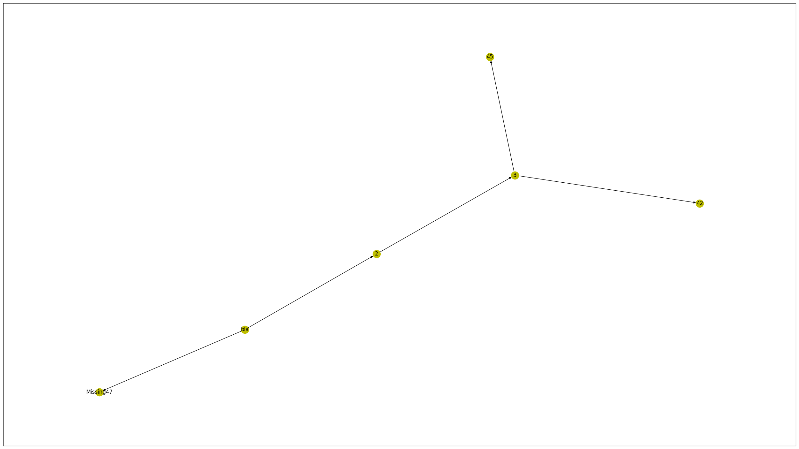
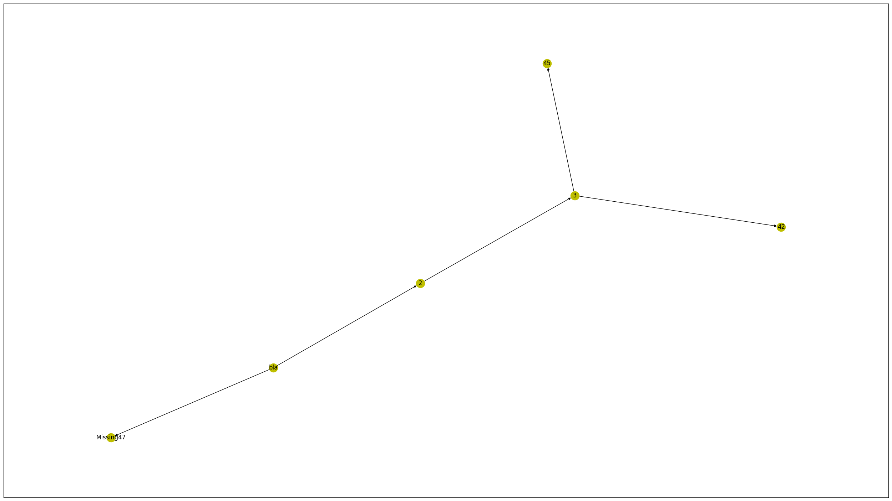

edges = {(39, 40), (39, 47), (40, 41), (41, 42), (41, 45)}
labels = {39: 'bla',
40: '2',
41: '3',
42: '42',
45: '45'}
visualize_graph(edges, labels)
labelize (lines)
Returns a dict with index, description Specifically for list of instructions to turn them into strings, preceded by their index E.g. labels[3] = ‘3jmpa’
visualize_graph (edges:set, labels=None)
Plots graph. edges: set with tuples (fromnode, tonode) labels: optional dictionary with node descriptions. If None, the node variable names will be used
If the names are passed and the node is not found, ’Missing’will be appended in the label
Usage example: from aocutils.special import visualize_graph, labelize visualize_graph(edges, labelize(lines))
Here is a guide how to install pygraphviz
https://pygraphviz.github.io/documentation/stable/install.html
python -m pip install –global-option=build_ext –global-option=“-IC:Files” –global-option=“-LC:Files” pygraphviz
edges = {(39, 40), (39, 47), (40, 41), (41, 42), (41, 45)}
labels = {39: 'bla',
40: '2',
41: '3',
42: '42',
45: '45'}
visualize_graph(edges, labels)
animate_grid (arr, step)
| Details | |
|---|---|
| arr | Numpy arr, e.g. np.random.rand(36).reshape((6,6)) |
| step | Function called with a counter, should return new grid, e.g. return np.random.rand(36).reshape((6,6)) |
plot (grid)